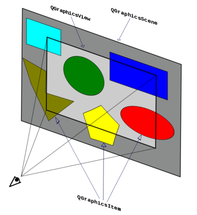
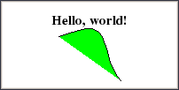

The information on this page was copied from here. Reformatted and prettified. It handles the basic idea of how a QGraphicsView works. The code examples are in C++ but should be straightforward in any language.
This is just a small introduction to Qt Canvas system. I’ll give a brief overview of the QGraphicsView framework.
In Qt, it is possible to create your own widgets through the standard provided classes like QPushButton, QCheckBox, QGroupBox, etc. But even these widgets have limitations when writing a fully customizable application. Taking into account that most applications are built around Two-dimensional canvas, Qt Software developed the Graphics View framework, namely QGraphicsView.
QGraphicsView was preceded by the former two-dimensional canvas, QCanvas. The framework is composed by 3 main elements:
QGraphicsView: a class for displaying the widgets of a scene; It represents a viewport.QGraphicsScene: a class for storing the widgets, handling event propagation(input from mouse, keyboard and other devices) and managing item states. It represents a scene with items in it;
A QGraphicsScene object is flexible enough to include any number of QGraphicsItem objects and still mantain the efficiency in retrieving them. On the other hand, a QGraphicsView object size is limited by the computer’s display size(1280×1024, 1024×768, 800×600, etc). Putting these 3 elements together we have something like this:

The idea is to manage the events of each item you create and redraw them as needed. This way, you can make your own widgets with more visually appealing features.
Now, let’s take a look at a small example:
QGraphicsScene scene;
scene.addText("Hello, world!", QFont("Times", 10, QFont::Bold));
QGraphicsView view(&scene);
view.show();
In the code above, I’ve created a QGraphicsScene object and added a text to it through the convenience function QGraphicsScene::addText. The type of the item added is a QGraphicsTextItem. Then a QGraphicsView object is created to display the scene. And the result is:
Let’s modify it a little bit:
QGraphicsScene scene;
QPainterPath path;
path.moveTo(10, 30);
path.cubicTo(80, 0, 50, 50, 80, 80);
scene.addPath(path, QPen(Qt::black), QBrush(Qt::green));
scene.addText("Hello, world!", QFont("Times", 10, QFont::Bold));
QGraphicsView view(&scene);
view.show();

Now I’ve also added a path to scene. This particular path creates a Bezier curve in green color. To create the path, it’s used the QPainterPath class, which allows you to draw any shape you want. And like the QGraphicsScene::addText function, there’s also a QGraphicsScene::addPath convenience function. The result is: